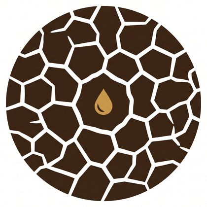
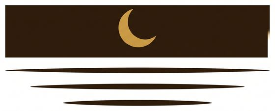
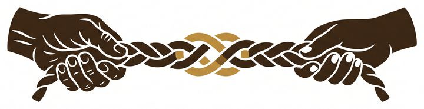

You carry something
- Sand
- Water
- Border
- Arrival
The Far Messengers · Book Four · something to do
Arrive Whole
“Before writing, everything a people knew lived in one place. Human memory. If it went out of the mind, it went out of the world.”
So somebody had to take it across sand, open water and guarded borders, and keep calm enough to arrive with it whole. For the next six minutes, that somebody is you.
About six minutes. Three crossings from the book, and one counted breath. Or go straight to the film ↓
Before the beach
What will you carry?
“Preparation was deciding what must not die,” the navigator says. Choose one. It weighs nothing, and it goes with you the whole way.
You are carrying it now
“Anyone can leave with it. Arriving with it is the work.”
Masan, stirring the pot, to a boy of seven. From Stone Breath.
She was telling him about the people whose work was to carry. The country in between would kill an ordinary person, she said, so they did not send an ordinary person. They sent “someone trained from small. How to breathe. How to run. How to be by yourself for four days without your own mind turning against you.”
The first crossing · the Empty Quarter
The dry well.
A man is crossing the largest continuous sand desert on earth, alone, carrying what his people know. “He carried no map. He was the map.”
“So. The fourth day. The dead well. Everything his crossing was strung on, cracked mud.”
“A frightened man does one thing here, and it is always the same thing. His heart bolts. He gets up and moves — fast, in some direction, because moving feels like doing.”
“This man did not do that. He sat down.”
Sit down.
He closed his fist around a small river-worn stone, and he counted his breath “to a rhythm like a slow drum: in for four, hold for four, out for six, hold for four.”
Rest your thumb on the lamp and keep it there (or hold the space bar). Breathe with the ring, three rounds. If you let go, the lamp only waits.
·

“It remembered.”
“And then his heart came down. And when it did, his quiet mind did the thing his racing mind could never have done.” A seep, half a day back and to the north, that his grandfather had mentioned once. “He got up. He went north. It was there.”
And standing over a miserable brown trickle, with two days still to walk, “he laughed out loud, alone.” The laughter was never the opposite of the calm. “It was the calm, arriving.”
It is still whole.
The second crossing · the open Pacific
The night he went still.
“On the sixteenth day the wind died entirely. Not eased — died. The sail hung like laundry.”
“A storm asks everything of your body. A calm asks everything of the other thing.” By the second windless day one of the crew had begun, quietly, to do arithmetic: days of water, days of food. “That is the thing nobody tells you about fear — it is the most contagious thing a human being carries.”
That night the navigator “sat in the stern, and he went still.”
Go still.
“Hands open on his knees, breath so slow she lost the count of it, the little masthead lamp swinging its small circle of light over him and away.”
Press the button, then open your hands and do nothing at all for twenty seconds. No tapping, no scrolling, no mouse. If you stir, the water stirs, and then it settles again.

“Good numbers. Wrong question.”
He came forward at first light and changed nothing. Same heading, same rations, same watch order. “He didn’t say anything. He didn’t do anything. He just came up from the stern with his face right, and my chest unclenched, and I hadn’t known it was clenched.”
Everything was different anyway, because “a boat reads its navigator the way a room reads whoever is holding it.” Then he asked the man with the numbers if he knew how to fish.
It is still whole.
The third crossing · a border, at night
The ones who carried words.
Rasa, the song keeper, tells this one about her own people.
“For forty years it was a crime to print a single book in my language.”
And for those same forty years, “men crossed the frontier at night with books wrapped in oilcloth under the hay in their wagons, under the fish in their baskets, under their coats against their skin.”
“What the tellings dwell on, lovingly, at length, is craft. How a man walked so the frost would not creak.”
One step to a breath.
Breathe in as the ring opens. As it closes, on the long breath out, tap the lamp once. That is one quiet step, and five take you across. If you hurry, the frost creaks and nothing is lost. Wait for the next breath out.
“The cargo is never the object.”
“The books were paper. What crossed the border was the permission for a people to continue.”
Under all of it, Rasa says, is “the oldest law of every carrying people”: “what you know, you owe.”
It is still whole. There is a lit door ahead.
Arrival
“Arrive whole. All the way whole. It is carried in your face now — so fix your face.”
The elder, at the rail landing, to the navigator.
You came across the sand, the still water and the border, and it came with you.
Now the last part of the work. On the voyaging canoes, “they chose who would carry each of these in their body, and they chose a second person for every one of them.”

Carried whole.
“That is all a far messenger ever was. Not a hero. A person who was carried, who is now carrying, for people they will not meet.”
“Put it in a hand. Whatever you know how to do. This year. One person, beside you, learning it all the way through.”